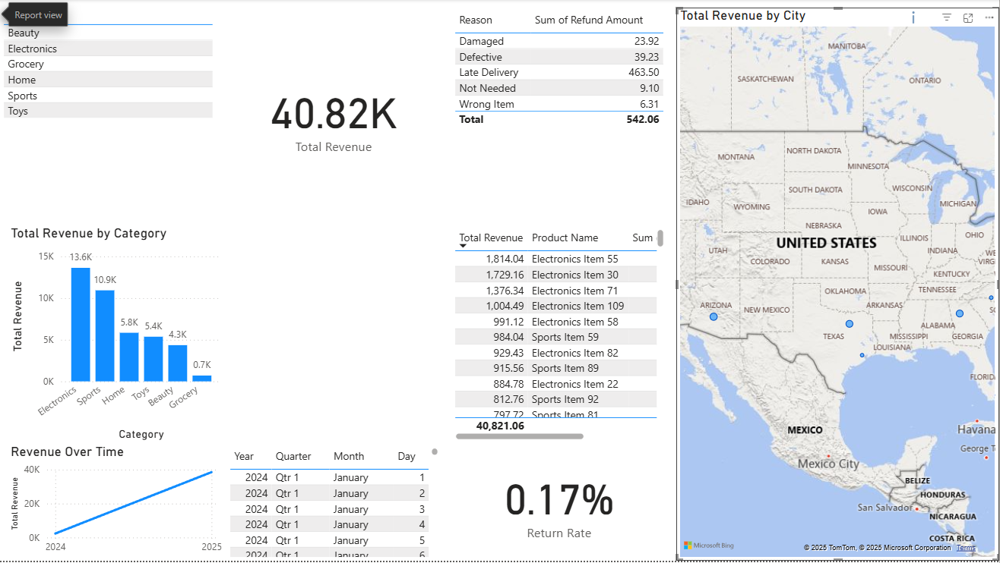

Role: Data & Operations Analyst (Personal Project)
Tools: SQL, SQLite, Power BI, Excel
The goal of this project was to understand how an e-commerce business is performing across revenue, repeat purchasing, and fulfillment efficiency. I wanted to answer questions such as: Which customers drive the most value? How often do customers return? Where are there bottlenecks in the order and shipping process?
I started with a raw e-commerce dataset containing orders, customers, products, and shipping details. I cleaned and standardized the data, then designed a relational schema and loaded everything into a SQLite database using SQL.
The core tables included:
Using SQL, I calculated and explored a series of metrics to understand performance, then brought the most important ones into Power BI as KPIs and visuals:
These metrics were then visualized in Power BI to make trends, seasonality, and bottlenecks easy to interpret.
This project demonstrates my ability to design a database from raw data, write SQL to generate meaningful KPIs, and turn those into clear operational insights for an e-commerce business. It mirrors the type of performance reporting and process-improvement analysis I’d deliver in an operations or business analyst role.
View the full project on GitHub: Ecommerce-Operations-Analytics